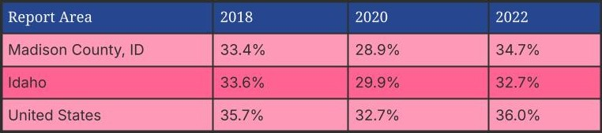

The Importance of Sleep
Sleep is a critical component of a healthy life at every age. Adequate sleep is a continuous need among living organisms 1 and plays a major role for both physical and mental health.
Adequate Sleep is associated with:
- Improved Cognitive Capabilities
- Improved Memory Retention
- Muscle/Brain Healing
Percentage of Adults with Insufficient Sleep, 2018-2022 (Crude)
The table and chart below display annual trends in the percentage of adults age 18+ who report having insufficient sleep.
 Data Source: Centers for Disease Control and Prevention, Behavioral Risk Factor Surveillance System. Accessed via the PLACES Data Portal>. 2022.Why Does This Matter
Inadequate sleep is a prevalent problem in our communities and across the globe. The struggle to obtain sleep in the evenings is felt at all ages; from little children to college kids, all the way to older adults, the strain is felt everywhere. The need to sleep is programmed into our brains from conception and the way our societies are set up doesn’t always allow for the needed seven hours or more. Inadequate sleep, especially chronic, also has consequences that cannot be overlooked. Inadequate sleep is a silent pandemic across the globe that needs to be addressed, or else the consequences will harm society as a whole.
Inadequate Sleep is associated with:
- Increased Cardiovascular disease
- Impaired Memory
- Weakened Immune System
- Obesity